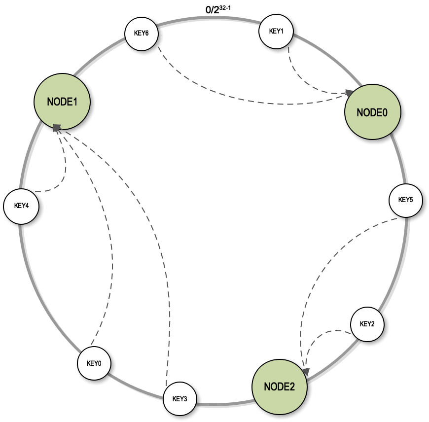
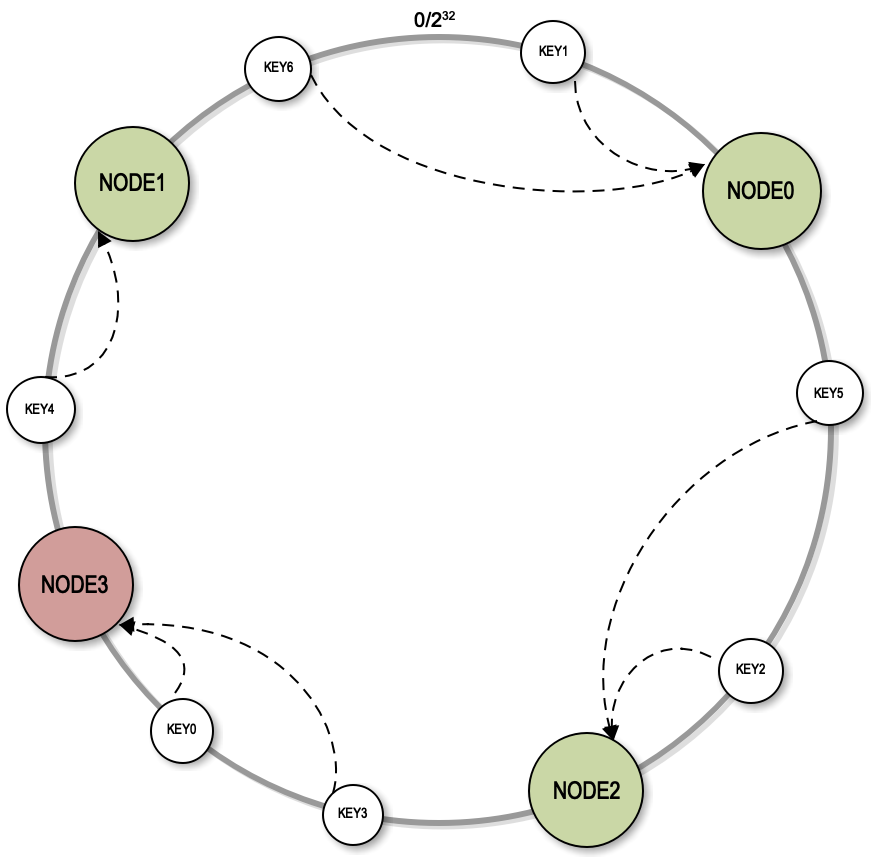
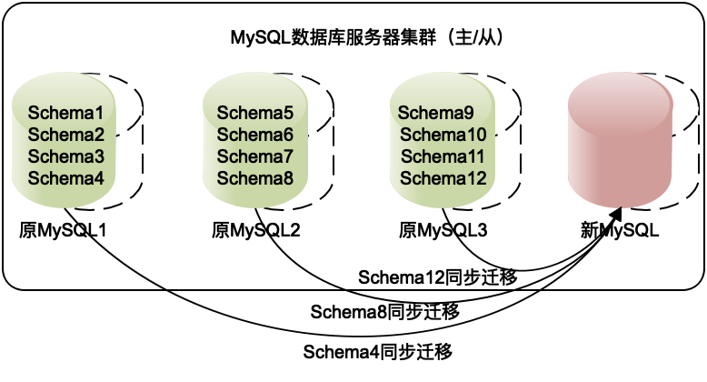

- 00 开篇词 掌握软件开发技术的第一性原理.md.html
- 01 程序运行原理：程序是如何运行又是如何崩溃的？.md.html
- 02 数据结构原理：Hash表的时间复杂度为什么是O(1)？.md.html
- 03 Java虚拟机原理：JVM为什么被称为机器（machine）？.md.html
- 04 网络编程原理：一个字符的互联网之旅.md.html
- 05 文件系统原理：如何用1分钟遍历一个100TB的文件？.md.html
- 06 数据库原理：为什么PrepareStatement性能更好更安全？.md.html
- 07 答疑 Java Web程序的运行时环境到底是怎样的？.md.html
- 07 编程语言原理：面向对象编程是编程的终极形态吗？.md.html
- 08 软件设计的方法论：软件为什么要建模？.md.html
- 09 软件设计实践：如何使用UML完成一个设计文档？.md.html
- 10 软件设计的目的：糟糕的程序员比优秀的程序员差在哪里？.md.html
- 11 软件设计的开闭原则：如何不修改代码却能实现需求变更？.md.html
- 12 软件设计的依赖倒置原则：如何不依赖代码却可以复用它的功能？.md.html
- 13 软件设计的里氏替换原则：正方形可以继承长方形吗？.md.html
- 14 软件设计的单一职责原则：为什么说一个类文件打开最好不要超过一屏？.md.html
- 15 软件设计的接口隔离原则：如何对类的调用者隐藏类的公有方法？.md.html
- 16 设计模式基础：不会灵活应用设计模式，你就没有掌握面向对象编程.md.html
- 17 设计模式应用：编程框架中的设计模式.md.html
- 18 反应式编程框架设计：如何使程序调用不阻塞等待，立即响应？.md.html
- 19 组件设计原则：组件的边界在哪里？.md.html
- 20 答疑 对于设计模式而言，场景到底有多重要？.md.html
- 20 领域驱动设计：35岁的程序员应该写什么样的代码？.md.html
- 21 分布式架构：如何应对高并发的用户请求.md.html
- 22 缓存架构：如何减少不必要的计算？.md.html
- 23 异步架构：如何避免互相依赖的系统间耦合？.md.html
- 24 负载均衡架构：如何用10行代码实现一个负载均衡服务？.md.html
- 25 数据存储架构：如何改善系统的数据存储能力？.md.html
- 26 搜索引擎架构：如何瞬间完成海量数据检索？.md.html
- 27 微服务架构：微服务究竟是灵丹还是毒药？.md.html
- 28 高性能架构：除了代码，你还可以在哪些地方优化性能？.md.html
- 29 高可用架构：我们为什么感觉不到淘宝应用升级时的停机？.md.html
- 30 安全性架构：为什么说用户密码泄漏是程序员的锅？.md.html
- 31 大数据架构：大数据技术架构的思想和原理是什么？.md.html
- 32 AI与物联网架构：从智能引擎到物联网平台.md.html
- 33 区块链技术架构：区块链到底能做什么？.md.html
- 33 答疑 互联网需要解决的技术问题是什么？.md.html
- 34 技术修炼之道：同样工作十几年，为什么有的人成为大厂架构师，有的人失业？.md.html
- 35 技术进阶之道：你和这个星球最顶级的程序员差几个等级？.md.html
- 36 技术落地之道：你真的知道自己要解决的问题是什么吗？.md.html
- 37 技术沟通之道：如何解决问题？.md.html
- 38 技术管理之道：你真的要转管理吗？.md.html
- 38 答疑 工作中的交往和沟通，都有哪些小技巧呢？.md.html
- 加餐 软件设计文档示例模板.md.html
- 结束语 期待未来的你，成为优秀的软件架构师.md.html
- 捐赠
33 答疑 互联网需要解决的技术问题是什么？
目前互联网软件应用可以说是最主流的软件应用了，相应的，互联网分布式架构也成为最主要的系统架构方案。这个模块主要讲的就是互联网架构的一些知识内容，互联网架构技术关键点有很多，我在专栏中也试图在有限的篇幅内尽量多地覆盖这些技术关键点，但是依然有很多关键技术点未能展开讲述，文章中很多思考题其实也都是分布式系统的关键技术点，我在这里再进行一些回顾和补充。
专栏22篇分布式缓存架构的思考题
我们讲 Memcached 路由算法讲到余数 Hash 算法，但是，这种算法在 Memcached 服务器集群扩容，也就是增加服务器的时候，会遇到较大的问题，问题是什么呢？应该如何解决？
分布式缓存将多台服务器构建成一个集群，共同对外提供缓存服务，那么应用程序在读写缓存数据的时候，如何知道自己应该访问哪一台服务器呢？答案就是缓存路由算法，通过缓存路由算法计算得到缓存服务器的编号，进而和该服务器通信，读写缓存数据。
比较简单的路由算法就是余数Hash算法，利用 key 的 Hash 值对服务器列表长度取模，根据余数就可以确定服务器列表的下标。
比如说，缓存服务器集群中有3台服务器，根据Key的Hash值对3取模得到的余数一定在0、1、2三个数字之间，每一个数字都对应着一台服务器，根据这个数字查找对应的服务器IP地址就可以了。
使用余数取模这种方式进行路由计算非常简单，但这种算法有一个问题，就是当服务器进行扩容的时候会出现缓存无法命中的情况。比如说我们当前的服务器集群有3台服务器，当增加1台服务器的时候，对3取膜就会变成对4去取模，导致的后果就是以前对3取模的时候写入的缓存数据，对4取模的时候可能就查找不到了。
我们添加服务器的主要目的是提高缓存集群的处理能力，但是不正确的路由算法可能会导致整个集群都失效，大部分缓存数据都查找不到。
解决这个问题的主要手段是使用一致性Hash算法。一致性Hash首先是构建一个一致性Hash环的结构。一致性Hash环的大小是0到2^32-1，实际上就是我们计算机中无符号整型的取值范围，这个取值范围0和最后一个值2^32-1首尾相连，构成了一个一致性Hash环。

然后我们将每个服务器的节点的Hash值放到环上，每一次进行服务器查找路由计算的时候，都是根据Key的Hash值顺时针查找距离它最近的服务器的节点。通过这种方式，Key不变的情况下找到的总是相同的服务器。这种一致性Hash算法除了可以实现像余数Hash一样的路由效果以外，对服务器的集群扩容效果同样也非常好。
扩容的时候，只需要将新节点的Hash值放到环上。比如图中的的NODE3放入环上以后，只影响到NODE1节点，原来需要到NODE1上查找的一部分数据改为到NODE3上查找，其余大部分数据还能正常访问。

但是一致性Hash算法有一个致命的缺陷。Hash值是一个随机值，把一个随机值放到一个环上以后，可能是不均衡的，也就是说某两个服务器节点在环上的可能距离很近，而和其它的服务器距离很远，这个时候就会导致有些服务器的负载压力特别大，有些服务器的负载压力非常小。而且在进行扩容的时候，比如说加入一个NODE3，影响的只是NODE1，而实际上加入一个服务器节点的时候，是希望它能够分摊其他所有服务器的一部分负载压力。
实践中，我们需要使用虚拟节点对算法进行改进。也就是说当把一个服务器节点放入到一致性Hash环上的时候，并不是把真实的服务器的Hash值放到环上，而是将一个服务器节点虚拟成若干个虚拟节点，把这些虚拟节点的Hash值放到环上去。在实践中通常是把一个服务器节点虚拟成200个虚拟节点，然后把200个虚拟节点放到环上。Key依然是顺时针的查找距离它最近的虚拟节点，找到虚拟节点以后，根据映射关系找到真正的物理节点。
通过使用虚拟节点的方式，物理节点之间的负载压力相对比较均衡。加入新节点的时候，实际上是加入了200个虚拟节点，这些虚拟节点随机落在环上，会对当前环上的每个节点都有影响，原来的每个节点都会有一小部分数据访问落到新节点上。这样，既保证大部分缓存能够命中，保持缓存服务的有效性，又分摊了所有缓存服务器的负载压力，达到了集群处理能力动态伸缩的目的。
第25篇数据存储架构思考题
分布式架构的一个最大特点是可以动态伸缩，可以随着需求变化，动态增加或者减少服务器。对于支持分片的分布式关系数据库而言，比如我们使用 MYCAT 进行数据分片，那么随着数据量逐渐增大，如何增加服务器以存储更多的数据呢？如果增加一台服务器，如何调整数据库分片，使部分数据迁移到新的服务器上？如何保证整个迁移过程快速、安全？
上面我们讨论了缓存集群增加服务器的解决方案，对于分布式关系数据库而言，也需要增加服务器以增强集群负载处理能力。
和缓存的情况不同，缓存如果有部分数据不能通过缓存获得，还可以到数据库查找。上述的一致性Hash算法也确实会导致小部分缓存服务器中的数据无法被找到，但是大部分缓存数据能够找到，这样是不影响缓存服务正常使用的。
但如果分布式关系数据库中有数据无法找到，可能会导致系统严重故障。因此分布式关系数据库集群扩容，增加服务器的时候，要求扩容以后，所有数据必须正常访问，不能有数据丢失。所以数据库扩容通常要进行数据迁移，即将原来服务器的部分数据迁移到新服务器上。
那么哪些数据需要迁移呢？迁移过程中如何保证数据一致呢？
实践中，分布式关系数据库采用逻辑数据库进行分片，而不是用物理服务器进行分片。
比如MySQL可以在一个数据库实例上创建多个Schema，每个Schema对应自己的文件目录。数据分片的时候就可以以Schema为单位进行分片，每个数据库实例启动多个Schema。进行服务器扩容的时候，只需要将部分Schema迁移到新服务器上就可以了。路由算法完全不需要修改，因为分片不变，但是集群的服务器却增加了。

而且因为MySQL有主从复制的能力，事实上，在迁移的时候，只需要将这些Schema的从库配置到新服务器上，数据就开始复制了，等数据同步完成，再将新服务器的Schema设置为主服务器，就完成的集群的扩容。
第21篇分布式架构的思考题
互联网应用系统和传统 IT 系统面对的挑战，除了高并发，还有哪些不同？
这个问题其实是分布式架构知识点的总结，互联网需要解决的技术问题是什么，解决方案是什么，带来的价值是什么，都在其中了。
互联网应用因为要处理大规模、高并发的用户访问，所以需要消耗巨大的计算资源，因此采用分布式技术，用很多台服务器构成一个分布式系统，共同提供计算服务，完成高并发的用户请求处理。
除了高并发的挑战，互联网应用还有着高可用的要求。传统的企业IT系统是给企业内部员工开发的。即使是服务外部用户的，但是只要企业员工下班了，系统就可以停机了。银行的柜员会下班，超市的收银员会下班，员工下班了，系统就可以停机维护，升级软件，更换硬件。
但是互联网应用要求7*24小时可用，永不停机，即使在软件系统升级的时候，系统也要对外提供服务。而且一般用户对互联网高可用的期望又特别高，如果支付宝几个小时不能使用，即使是深夜，也可能会引起很大的恐慌。
而一个由数十万台服务器组成，为数亿用户提供服务的互联网系统，造成停机的可能性又非常大，所以需要在架构设计的时候，专门，甚至重点考虑系统的高可用。关于高可用的架构，我主要在[第29篇]高可用架构一篇进行了讨论。
互联网应用，除了高并发的用户访问量大，需要存储的数据量也非常大。淘宝有近十亿用户、近百亿商品，如何存储这些海量的数据，也是传统IT企业不会面对的技术挑战。关于海量数据的存储技术，我主要在[25篇数据存储架构]进行了讨论。
有了海量的数据，如何在这些数据中快速进行查找，我在[26篇搜索引擎架构]进行了讲解。如何更好地利用这些数据，挖掘出数据中的价值，使系统具有智能化的特性，我在[31篇大数据架构]中进行了讨论。
传统企业IT系统部署在企业的局域网中，接入的电脑都是企业内部电脑，因此网络和安全环境比较简单。而互联网应用需要对全世界提供服务，任何人在任何地方都可以访问，当有人以恶意的方式访问系统的时候，就会带来安全性的问题。
安全性包含两个方面，一个是恶意用户以我们不期望的方式访问系统，比如恶意攻击系统，或者黄牛党、羊毛党通过不当方式获利。另一个是数据泄密，用户密码、银行卡号这些信息如果被泄漏，会对用户和企业都造成巨大的损失。[30篇安全性架构]讨论的就是这方面的内容。
传统的IT系统一旦部署上线，后面只会做一些小的bug修复或者特定的改动，不会持续对系统再进行大规模的开发了。而互联网系统部署上线仅仅意味着开始进行一个新业务的打样，随着业务的不断探索，以及竞争对手的持续压力，系统需要持续不断地进行迭代更新。
如何使新功能的开发更加快速，使功能间的耦合更加少，需要在软件设计的时候进行考虑，这其实是专栏第二个模块软件的设计原理主要讨论的内容。而在架构模块，主要是在[第23篇异步架构]以及[27篇微服务架构]进行了探讨。
互联网现在已经进入泛互联网时代，也就是说，不是只有互联网企业才能通过互联网为用户提供服务，各种传统的行业，所有为普通用户提供服务的企业都已经转向互联网了。可以说互联网重构了这个时代的商业模式，而以分布式技术为代表的互联网技术也必然重构软件开发与架构设计的技术模式。
© 2019 - 2023 Liangliang Lee. Powered by gin and hexo-theme-book.